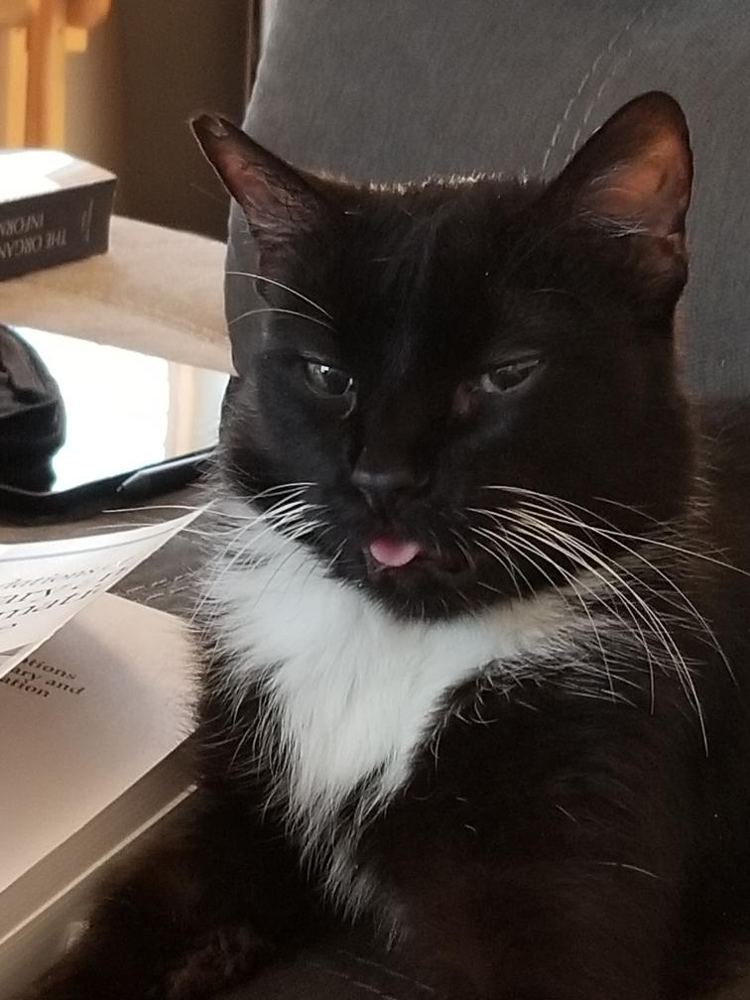

While a lot of cats play with all kinds of toys, if they were designed for cats tuxedo will promptly ignore them. If they are tools humans need howver Tux can spend all day playing with them!
Some of Tuxedo's favorite toys include:
When tuxedo was younger exploring the neighborhoood and keeping stray cats away from the house were his favorite activities, as he got older however he developed a taste for some of the finer things in life!
Tuxedoes favorite activities grew to include:
Thanks for reading about my amazing cat! May he rest in peace.
